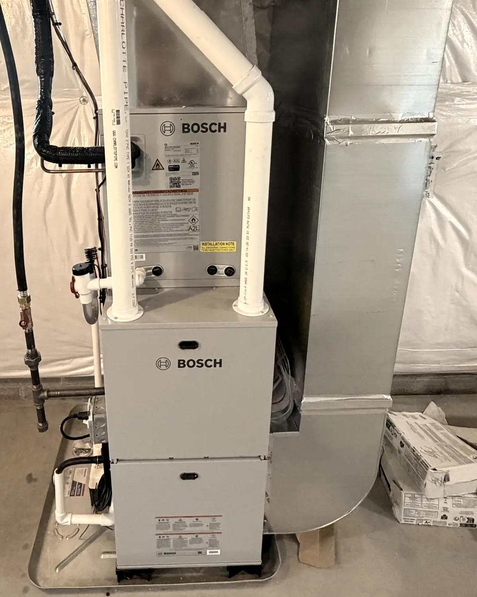
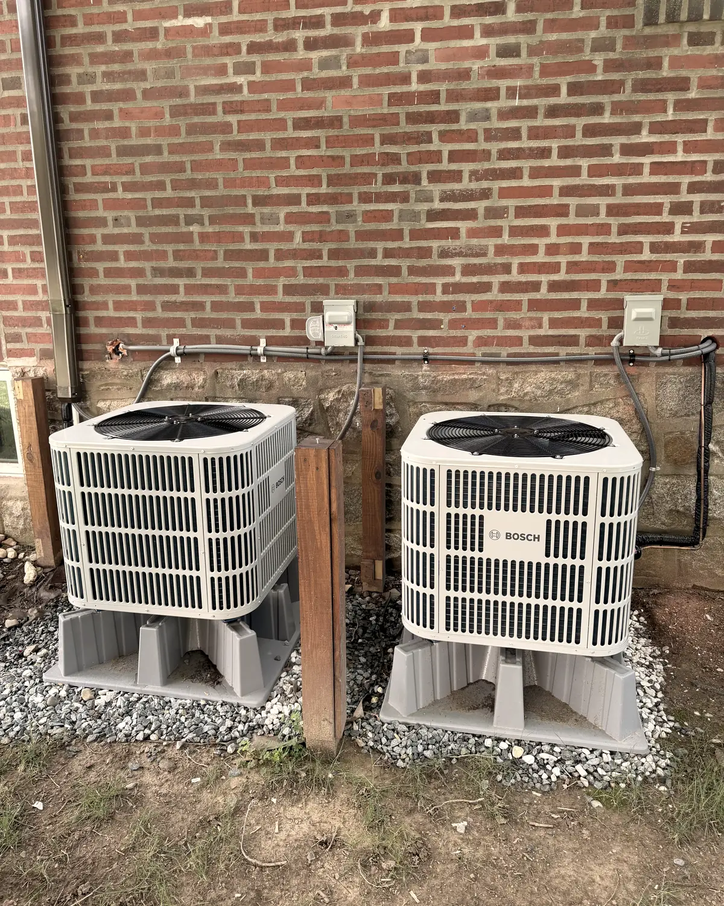
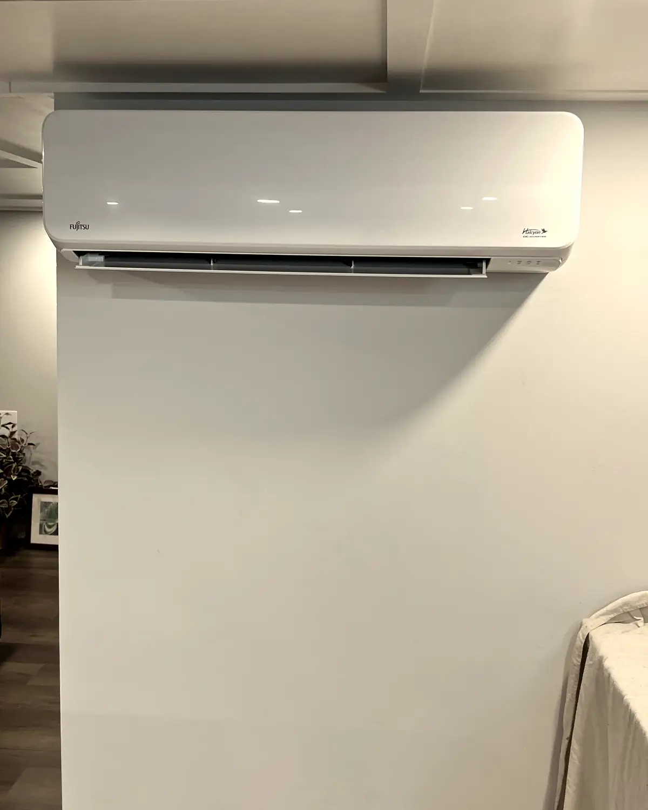

Heating and cooling system replacement
When the furnace, boiler or air conditioner is at the end of its life, we size the new system to the house, install it ourselves and take the old one away.

HVAC replacement
What we replace and install
- Gas furnaces
- Hot water boilers
- High-efficiency wall-hung boilers
- Central air conditioners
- Heat pumps
- Ductless mini-splits
- Air handlers and coils
- Ductwork changes for the new system
- Boiler piping and circulators
- Thermostats and zone controls
- Venting and condensate drains
- Old equipment removal
Know what you're looking at
Signs it's time to replace
- The system is past its expected life
- A gas furnace usually lasts fifteen to twenty years and central air twelve to fifteen. A boiler that has been looked after can go longer. Past those ages, parts fail more often and efficiency drops.
- The repair bills keep coming
- One repair on a ten-year-old system is normal. A second and a third inside a couple of years means the next bill is better spent on new equipment.
- An air conditioner that runs on R-22
- Most systems put in before 2010 use R-22 refrigerant, which has not been made in the US since 2020. Recharging one is expensive, so a leak is usually the point to replace.
- Rooms that never get comfortable
- Sometimes that is the ductwork, or one thermostat in the wrong place. Sometimes the equipment was the wrong size from the day it went in. We check before we quote, so the new system does not inherit the old problem.
No ducts? That is common here
A lot of homes in Delaware County and on the Main Line were built with radiators and never had ductwork. That does not rule out air conditioning. Ductless mini-splits heat and cool room by room through a small line to an outdoor unit, with no plaster to tear out. And when the boiler itself is due, a wall-hung high-efficiency boiler gives back floor space in the basement.
Our work
Heating and cooling installs



How a job goes
Three steps, no surprises
Book or call
Pick a time online or call. One of us comes out and looks at what you have now.
You get a price
We explain the options in plain words and price each one. Nothing starts until you say go.
We install it
An owner does the work, tests it, shows you how it runs and takes the old equipment away.
Common questions
Replacement questions
Should I repair or replace?
If the system is past fifteen years and the repair costs a large share of a new unit, replacing is usually the better use of the money. Younger than that, a repair usually makes more sense, and we will say so before we quote a replacement.
How long does a replacement take?
A furnace or air conditioner swap is usually done in a day. A boiler, a full heating and cooling system or new ductwork can take two or three days. We give you the schedule before we start.
How do you decide what size system I need?
By the house, not by the label on the old unit. We look at the square footage, the insulation, the windows and the existing ducts or radiators. Equipment that is too big turns on and off constantly, wears out sooner and leaves the house clammy in summer.
Do heat pumps work in Pennsylvania winters?
Current cold-climate heat pumps heat well through winters here. Many homeowners keep their furnace or boiler as backup for the coldest days.
Do I need a permit?
Usually, for new heating and cooling equipment. Each township and borough handles its own. We tell you what your job needs before we start.
Schedule service
System on its last legs?
Book a visit online or call. We will look at what you have and price the replacement.